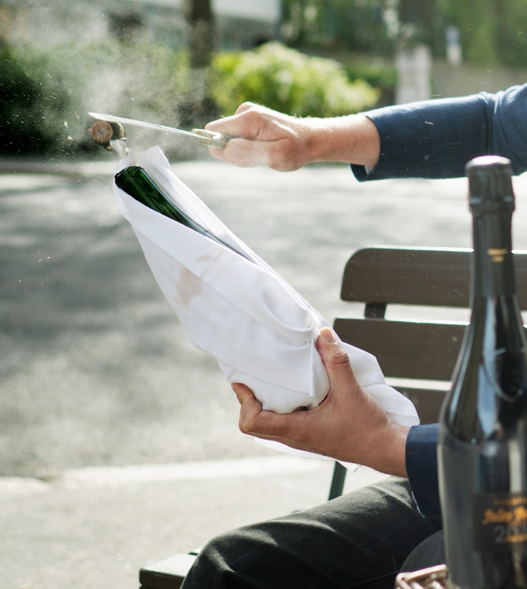
Oslo
Sommelier
Sommelier Ole S. Berg. Vinkurs, smakinger og privat sommelier for selskap, bedrifter og restauranter.
Sommelier Ole S. Berg. Wine courses, tastings and private sommelier for parties, companies and restaurants.
Kontakt megContact meDet jeg tilbyrWhat I offer
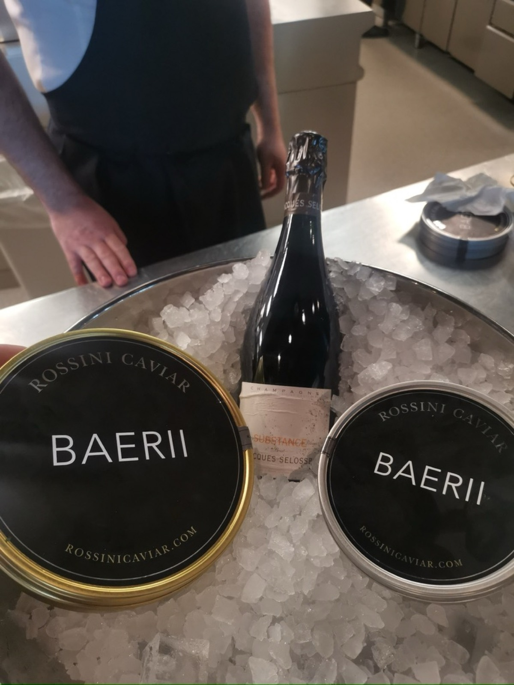
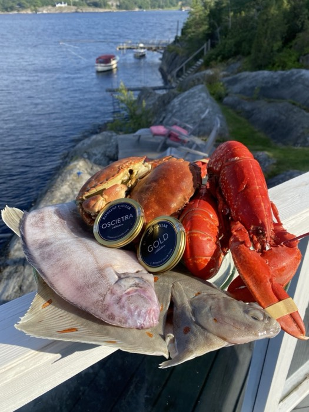
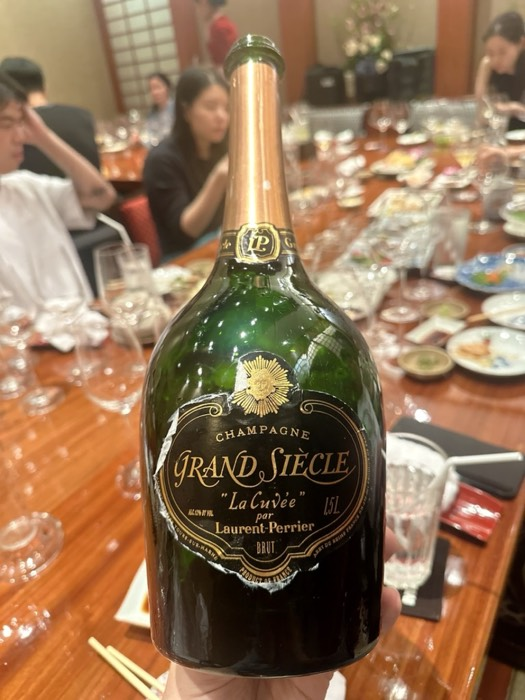
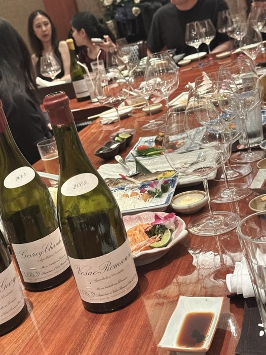
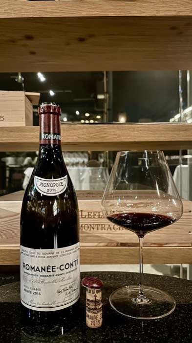
Fra tidligere kvelderFrom past evenings
Tidligere arrangementerPast events
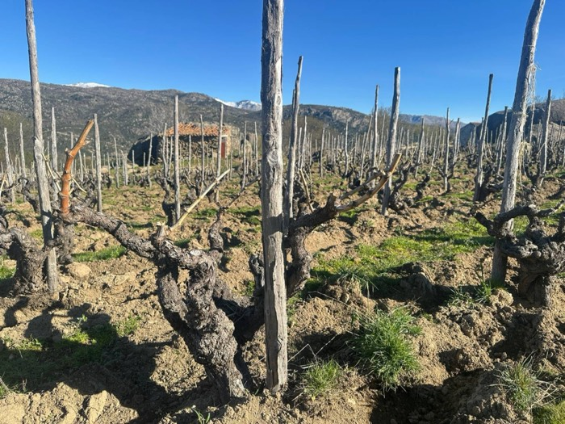
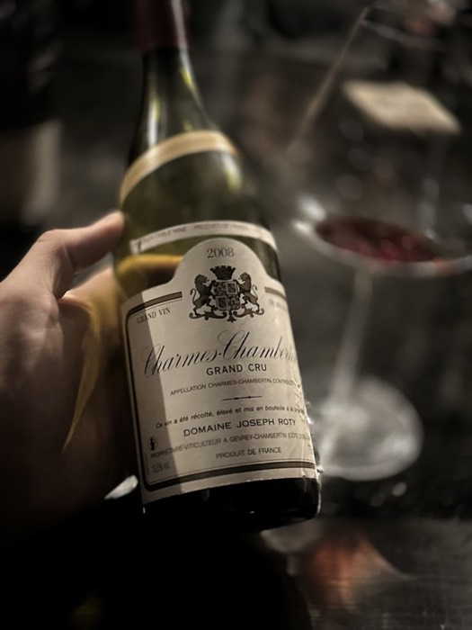
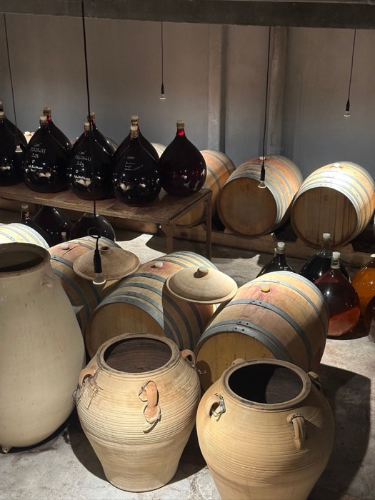
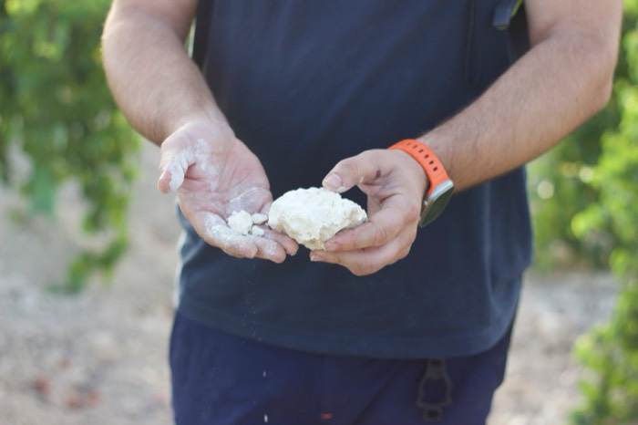
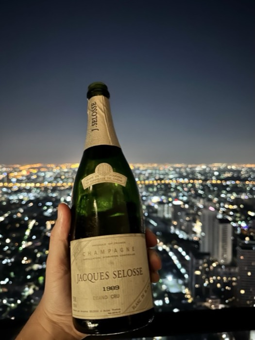
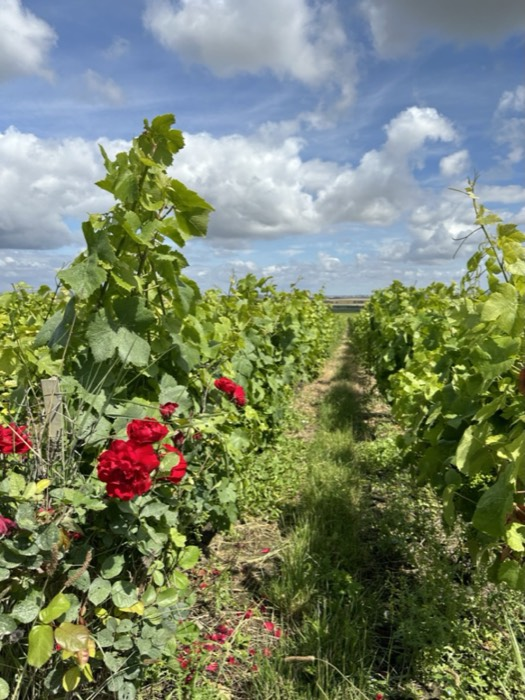
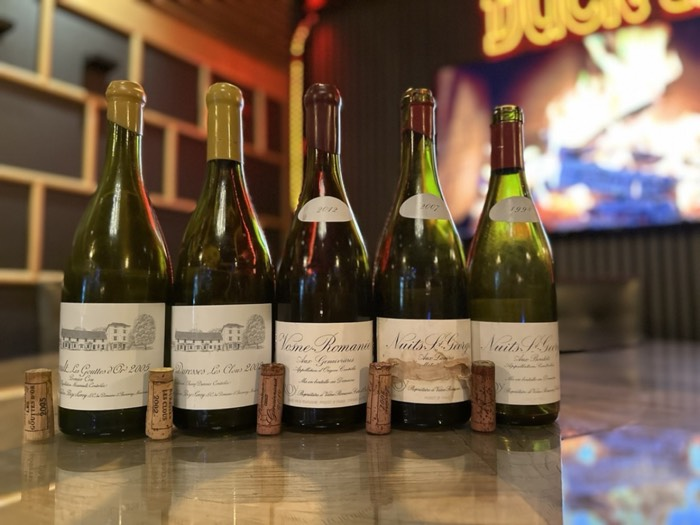
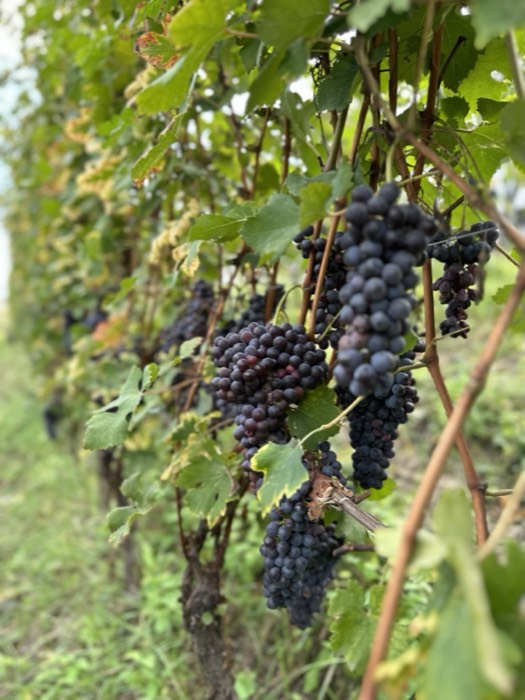
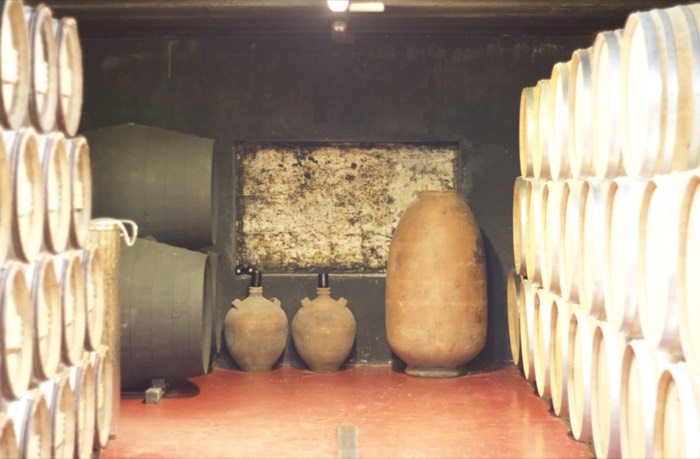
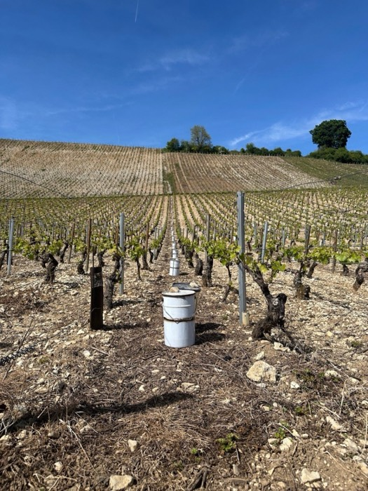
Bildene fra vinmarker og kjellere er tatt av meg.Vineyard and cellar photos by me.
Om megAbout
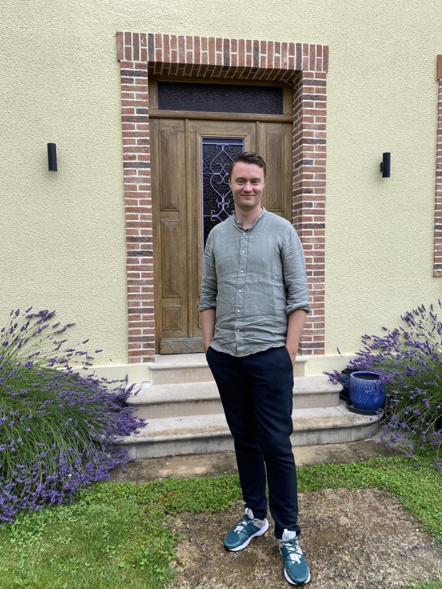
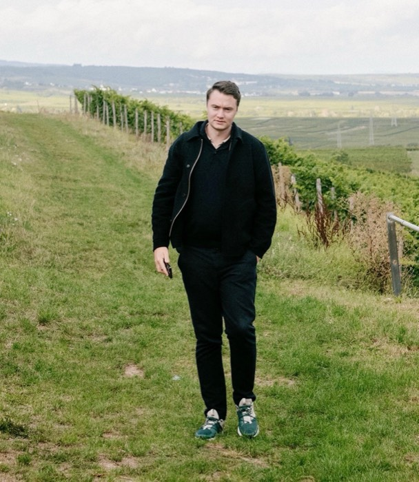
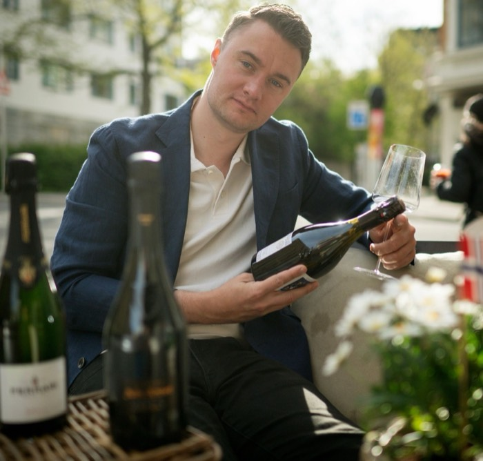
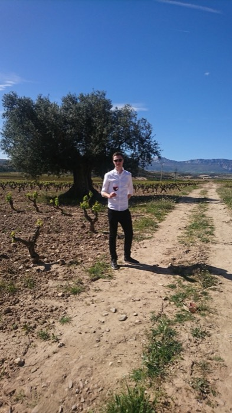
Jeg har jobbet med vin på gulvet og i kjelleren. I dag skriver jeg om vin i Finansavisen, underviser ved Norsk Sommelier Utdannelse, holder vinkurs for restauranter og privatpersoner på norsk eller engelsk, og er partner i Vinify.
I’ve worked with wine on the restaurant floor and in the cellar. Today I write about wine for Finansavisen, teach at the Norwegian Sommelier School, run wine courses for restaurants and private clients in Norwegian or English, and am a partner at Vinify.
UtdanningEducation
- DipWSET Wine & Spirit Education Trust
Den høyeste vinutdannelsen du kan ta i Norge. Internasjonalt anerkjent, fullført i 2023.
The Level 4 Diploma in Wines, the highest wine qualification available in Norway. Internationally recognised, completed in 2023.
- SommelierutdannelseSommelier education Dansk Sommelieruddannelse
Praktisk og teoretisk utdannelse i sommelierfaget. København, 2017.
Practical and theoretical training as a sommelier. Copenhagen, 2017.
- BaristasertifisertCertified barista SCAE
NåNow
- Foreleser ved Norsk Sommelier UtdannelseLecturer, Norwegian Sommelier School ↗
- Skriver om vin i FinansavisenWine writer, Finansavisen ↗
- Partner i VinifyPartner at Vinify ↗
- Del av Nordstrand CateringPart of Nordstrand Catering ↗
TidligerePreviously
- Head sommelier & kjellermestercellar master Grand Café Vinkjellerwine cellar
- Front of house head sommelier Fursetgruppen
Mine siste
artiklerMy latest
articles


Si heiSay hello
ole@oslosomm.noEller skriv her, så svarer jeg på e-post.
Or write here and I’ll reply by email.